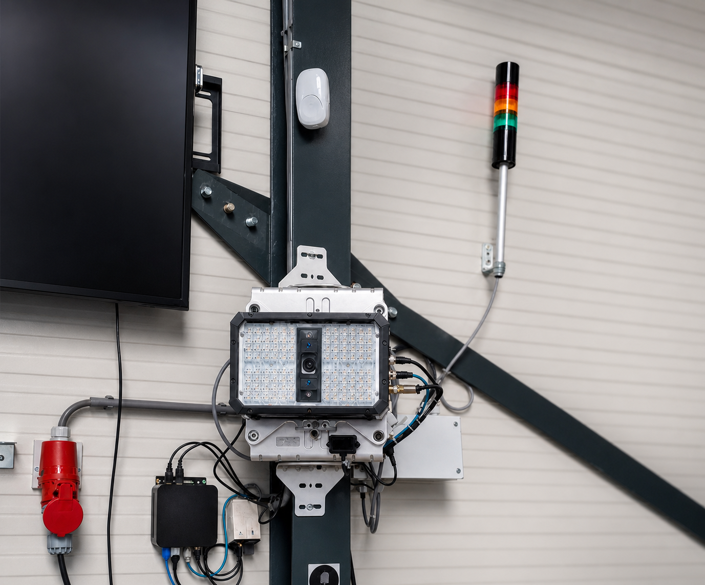

Machine Builders
PLC software, Codesys development, Bachmann systems, CANBUS/J1939, FAT preparation and machine troubleshooting.
Industrial automation software
The genetics of automation
PLC, HMI, OT and industrial data support for automation systems that need to work reliably in the real world.
Positioning
Dygenix supports automation systems where software, controls, data, operators and real-world behavior all have to agree.
Why contact Dygenix
Who we help
PLC software, Codesys development, Bachmann systems, CANBUS/J1939, FAT preparation and machine troubleshooting.
Support when production systems need to be improved, stabilised or better understood without losing control of the running process.
Automation support for test setups where signals, software, data and results must be reliable and repeatable.
Extra engineering capacity for plants, battery systems, energy production, lab automation, embedded controls and OT systems.
About Dygenix
Dygenix Automation was started on 28 May 2025 by Francis van Uyten, a software engineer working in industrial automation.
The company is young, but the engineering behind it is not. The work comes from years spent around machines, PLC software, HMI systems, test tools, data monitoring, embedded controls and the practical reality of getting automation to behave on the floor.
The name Dygenix points to the deeper structure of automation: the logic, signals, data and decisions that make a machine understandable and maintainable. That is the meaning behind the line: The genetics of automation.
Services
When a system runs, but nobody fully trusts what the software or data is doing, start by making the behavior visible again.
New Bachmann, Codesys, PLC, HMI and Python tooling for operators, FAT, OT workflows and the next engineer who has to maintain it.
Strong support during FAT and controlled testing. SAT can be supported when the project really needs it.
Project work

Recent validation
A commissioned QR scanner validation workflow for an industrial process, built around a Keyence-based scanner solution and a custom operator dashboard.
Confirmed result: commissioned system, API-ready architecture, reduced manual scanning, up to 8 codes per second and detection distance up to 4 meters.
Experience
Technologies
Urgent support
Downtime is not an abstract word. When a machine stops, the priority is to understand what changed, what is failing and what can be done safely.
Controlled analysis, clear communication and restoring reliable operation quickly and safely.
Approach
Look at the process, operators, safety assumptions and failure modes before touching the code.
Make the critical behavior work first. Then harden it with tests, logging and clear state.
Document what matters, isolate the logic and keep future troubleshooting practical.
Contact
Founded in 2025 by Francis van Uyten. The genetics of automation.
Send a short description of the system or issue. Dygenix will first clarify the situation, then determine whether remote review, on-site support or project work makes sense.